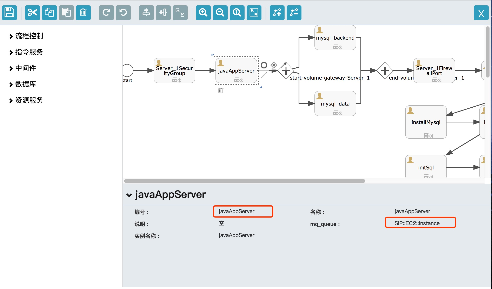
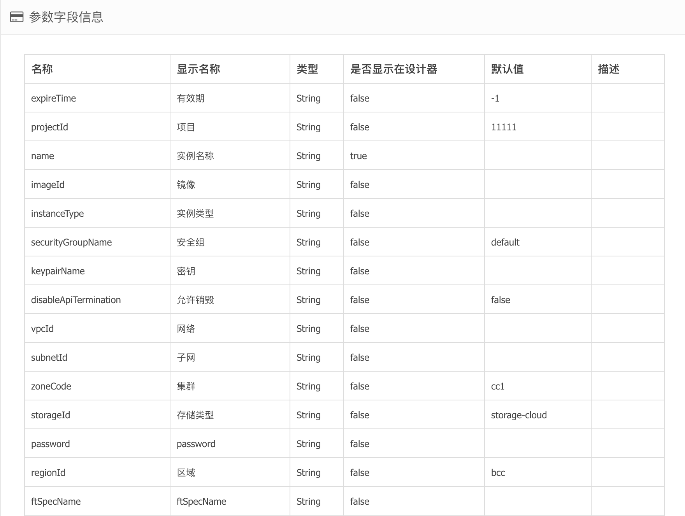

实例是一键交付服务的重要组成，是指令运行的承载，是应用拓扑视图中的重要一环。
实例交付
SIP::EC2::Instance,交付一台云主机
在设计器中，从资源服务中拖动实例到主面板。

- 编号是BPMN中元素的唯一标识，不允许写入中文。
- 在实例创建的场景中，编号同样也是云主机的编号，譬如Host解析。
- 在
SipRS的框架中，要通过编号获取输出信息，例如${outputs.javaAppServer.instanceId}。
关于如何获取输出信息，请参看https://siprs-doc.github.io/designer/modelDesigne.html
- mq_queue是每个执行器的唯一标识
- 编号，名称，描述都是BPMN自己的元素，每个执行器都会有
- 实例名称，是虚拟机的code，不能为中文，其中写入host是根据虚拟机的code来的（如果为空，则默认取名称字段）
实际上创建一台云主机，一定不止有名称和编号这两个参数，还会包括镜像，实例规模，密钥，网络等，如下图所示：

因为这些参数，大多都需要在部署服务的时候，由用户选择，所以系统初始化的时候，会设置为不显示在设计器中。
输出信息：
| 名称 | 显示名称 |
|---|---|
| privateIp | 私有IP |
| instanceCode | 实例编号：i-xxxx |
| instanceId | 实例ID，UUID |
销毁实例
SIP::EC2::Instance::Terminate，销毁一台云主机
销毁实例的参数如下：
| 名称 | 显示名称 |
|---|---|
| regionId | 区域ID |
| instanceCode | 实例编号 |
| instanceId | 实例ID |
使用实例ID，或者使用区域+编号的组合，可以唯一确定一台虚拟机，进行销毁操作。